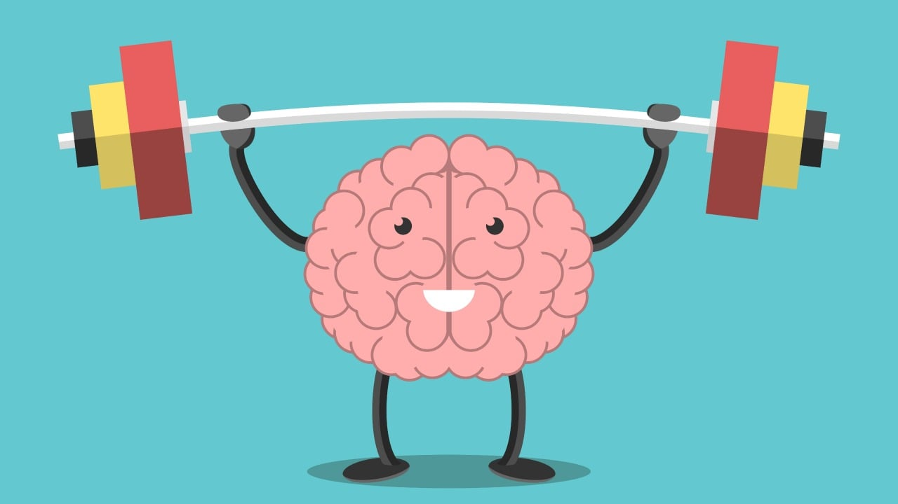

Mental Dayanıklılık

Fitness yolculuğunda fiziksel dayanıklılığın yanı sıra mental dayanıklılık da son derece önemli bir rol oynar. Mental dayanıklılık, zorluklarla karşılaşıldığında vazgeçmeme, odaklanma ve hedefe ulaşma azmini koruma yeteneğidir. Bu sayfada, mental dayanıklılığı artırmak için kullanılabilecek stratejiler ve bilimsel temeller ele alınacaktır.
Mental Dayanıklılık Nedir?
Mental dayanıklılık, stresli durumlarla başa çıkma, zorluklara karşı direnç gösterme ve odaklanarak hedeflere ulaşabilme yeteneğidir. Fitness dünyasında bu, antrenman sırasında yaşanan yorgunluk, ağrı veya zihinsel engellerle mücadele etme kabiliyetidir. Mental dayanıklılığı yüksek olan bireyler, fiziksel ve psikolojik zorluklarla başa çıkma konusunda daha başarılıdır.
Mental Dayanıklılığın Temel Bileşenleri
Mental dayanıklılık, üç temel bileşenden oluşur: odaklanma, duygusal kontrol ve motivasyon. Bu bileşenler, bireylerin daha iyi performans göstermesine ve antrenman hedeflerine ulaşmasına yardımcı olur.
- Odaklanma: Zihinsel olarak antrenmanın her aşamasına odaklanabilme, dikkat dağılmalarını engellemeye yardımcı olur.
- Duygusal Kontrol: Fiziksel zorluklar karşısında duygusal tepkileri yönetebilme, stresin vücuda olumsuz etkilerini azaltır.
- Motivasyon: Zorluklar karşısında hedeflere ulaşma azmi, kişisel hedeflere odaklanarak daha güçlü bir motivasyon oluşturur.
Mental Dayanıklılığı Artırmanın Yolları
Mental dayanıklılık, pratik ve sürekli çaba ile geliştirilebilir. İşte mental dayanıklılığı artırmak için bazı etkili stratejiler:
- Olumlu Düşünce Geliştirme: Zihinsel olarak pozitif kalmak, stresli anlarda bile rahatlamayı sağlar. Olumlu düşünceler, başarısızlıklar karşısında bile motivasyonunuzu korumanıza yardımcı olur.
- Hedef Belirleme: Net, ulaşılabilir hedefler belirlemek, zihinsel olarak bir yön ve amaç sağlar. Kısa vadeli ve uzun vadeli hedefler belirleyerek, her bir adımda başarı hissi elde edilebilir.
- Görselleştirme: Başarıyı zihinsel olarak canlandırmak, gerçek antrenmanlarda performansı artırabilir. Zihinde başarılı bir şekilde hedeflere ulaşma görüntüleri, öz güveni artırır.
- Farkındalık ve Meditasyon: Meditasyon ve nefes egzersizleri, zihinsel sakinlik sağlayarak stresle başa çıkmanıza yardımcı olabilir. Farkındalık, zihninizi sakinleştirir ve odaklanmanızı artırır.
- Olumsuz Duyguları Yönetme: Zihinsel dayanıklılığı artırmak için, olumsuz duyguların farkında olmak ve bunları sağlıklı yollarla yönetmek önemlidir. Bu, stres ve kaygıyı azaltabilir.
- Gelişim Odaklı Zihniyet: Hatalar ve engeller, gelişim fırsatları olarak görülmelidir. Başarısızlıklar, öğrenme deneyimleri olarak kabul edilmelidir.
Zihinsel Dayanıklılığınızı Geliştirmek İçin Uygulamalar
Mental dayanıklılığı geliştirmek için fitness antrenmanlarının yanı sıra günlük yaşamda da birkaç basit uygulama yapılabilir. İşte bazı öneriler:
- Günlük Antrenman Programlarına Odaklanma: Her gün belirli bir süre boyunca sadece antrenmana odaklanmak, zihinsel güç kazanılmasına yardımcı olur. Antrenman süresince yalnızca hedefe odaklanmak ve herhangi bir dış etkeni göz ardı etmek önemlidir.
- Zihinsel Egzersizler: Zihni, duygusal ve fiziksel engellerle başa çıkabilmesi için eğitim yapmak gereklidir. Zihinsel egzersizler, görselleştirme tekniklerini ve başarıyı hayal etmeyi içerebilir.
- Psikolojik Sınırları Test Etme: Zihinsel dayanıklılığınızı test etmek için antrenman sırasında konfor alanınızın dışına çıkmaya çalışın. Fiziksel sınırların ötesinde de mental sınırlar vardır ve bu sınırları zorlamak, zihinsel güç sağlar.
Bilimsel Açıklamalar
Araştırmalar, zihinsel dayanıklılığın beyinle yakından ilişkili olduğunu göstermektedir. Beynin prefrontal korteksi, karar verme, odaklanma ve duygusal kontrol üzerinde önemli bir rol oynar. Ayrıca, egzersiz sırasında endorfin ve dopamin gibi mutluluk hormonları salınır, bu da ruh halini iyileştirir ve zihinsel güç kazandırır.
Bunun yanı sıra, mental dayanıklılığın gelişiminde düzenli egzersizin rolü büyüktür. Düzenli fiziksel aktivite, beynin stresle başa çıkma yeteneğini artırarak, kişilerin zorlayıcı durumlarla daha etkili bir şekilde başa çıkmalarına yardımcı olabilir.